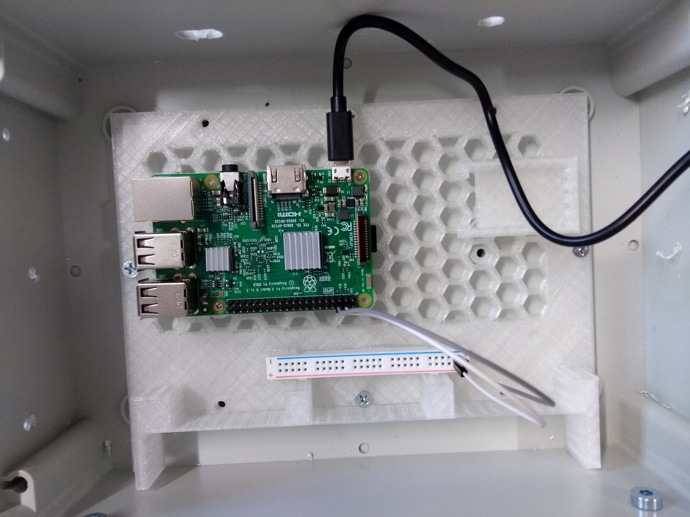
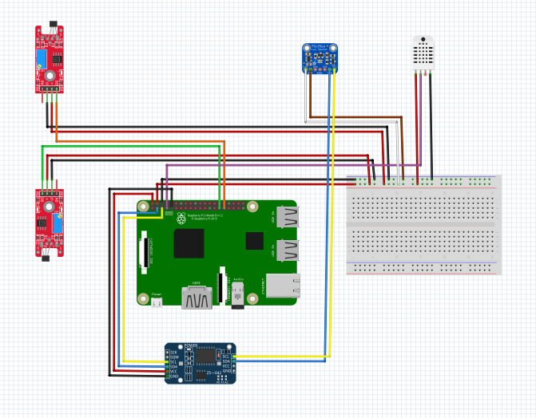
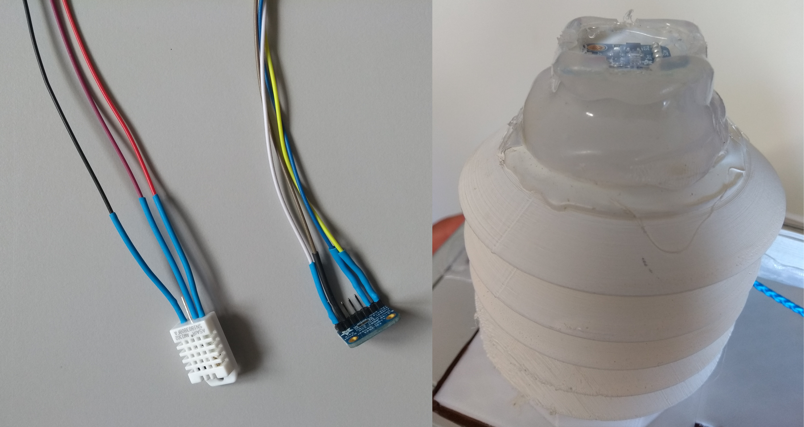
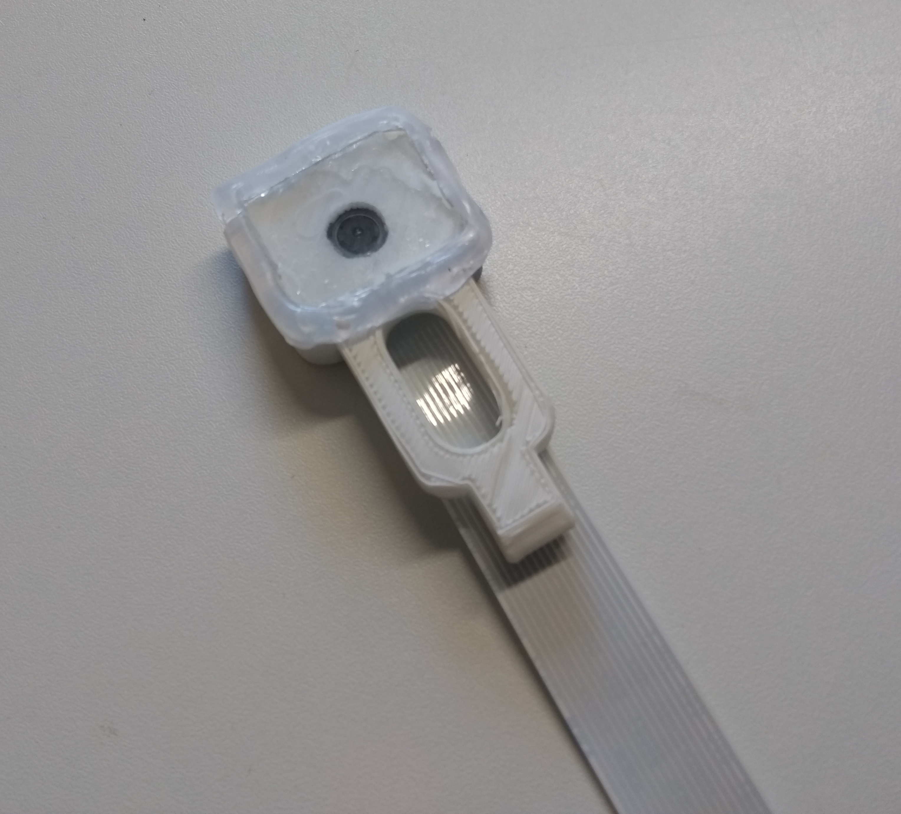
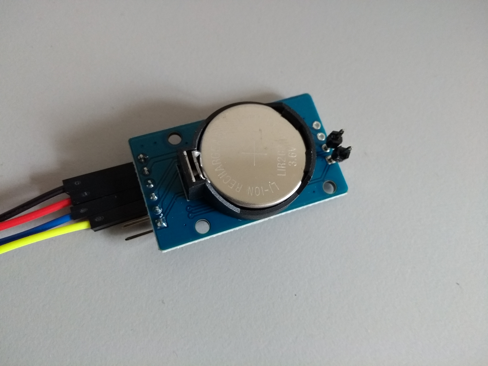
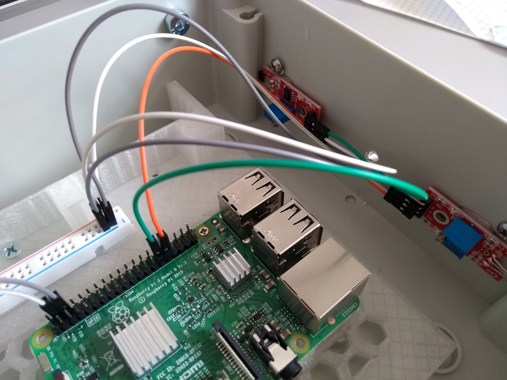
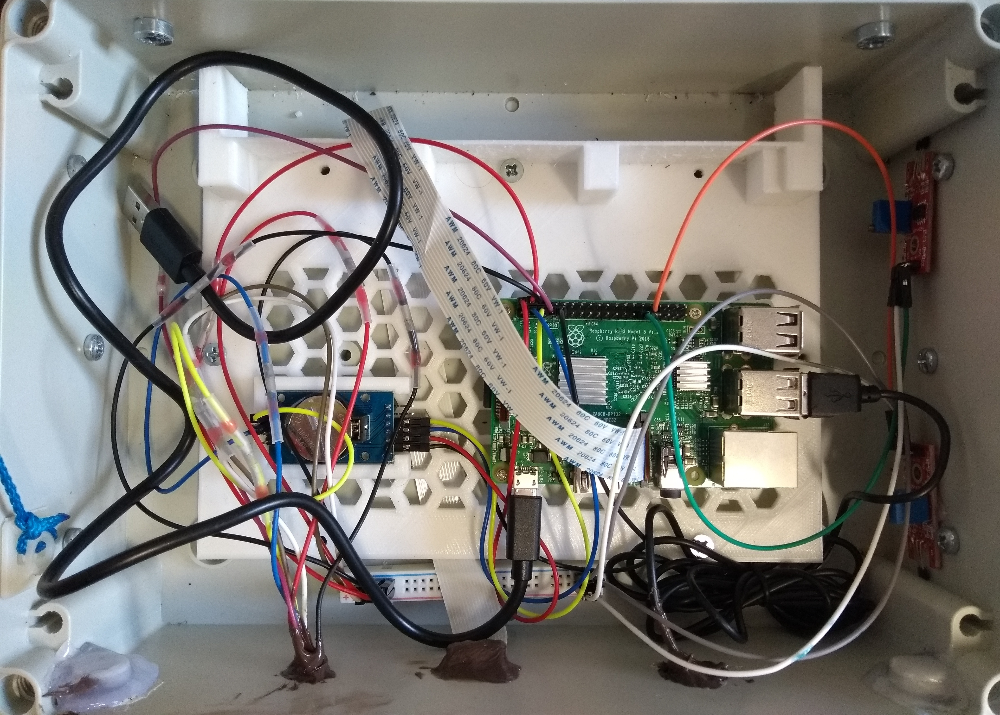

Here you will find the step-by-step information on the assembly of the sensor box. Current versions of the designs for required 3d-printed parts can be found in a GitHub repository of Natur4.0.
First, we drilled some holes in the containment box to attach the hinges between the box and lid. We used a 5mm drill bit which fits well into the indentations at the side of the box. We used a 6mm drill bit to slightly expand the holes. Then, we attached the hinges with the supplied screws from the hinge set. After attaching the hinges, we prepared the topside of the box by drilling holes for the sensor tower with entries for the cables of the sensors, the camera and the microphone. To correctly place the entry holes for the cables we prepared a printable template. Then we drilled holes which are used to attach the rolls to the containment box using another template. Here, we used a 3,5 mm drill bit which fits very well with the rolls we purchased.
We drilled another two holes for the suspension rope which ensures the stability of the box while being mounted in the cable car. Here, we used a 4mm drill and another printable template. We inserted the rope of 100cm in length in both holes put a knot on the inner ends and sealed it by cautiously using a lighter to melt some of the plastic. We made sure that the length of the rope outside of the box is at least 80 cm. On the inside, we attached two cable tie sockets and connected them with the 30 cm rope. (NEEDS CLARIFICATION AND IMAGES - NO ONE NOT FAMILIAR WITH THE PROCESS UNDERSTANDS THIS!!!)
Last we used the six 4x16mm countersunk-head screws to attach the rolls to the box. We used the washers to seal off the entry holes and the safety nuts to ensure the firmness of the rolls. Additionally, we put instant glue under the washers and safety nuts and then gave the screws and nuts one last thrust to ensure the box is waterproof.
We used four 4x12 mm screws to attach the 3d-printed microcontroller mounting plate cautiously to the containment box. The screws must not pierce through the back of the box. Before attaching the microcontroller to the socket we pasted the heat sinks on the processor units of the Raspberry Pi. Then we put the it on the mounting plate with the USB-ports pointing to the right side and fixated it with four 2,9x13mm screws. From a simple breadboard we took only one energy rack and placed it on the bottom side of the mounting plate. Then we put the powerbank on the inner side of the containment box right where the mounting plate shows a free space of the size of the powerbank. We did not connect the USB-power-cable to the Raspberry Pi just yet, since we first attached all the missing sensors.

We recommend to use jumper cables of 50cm in length to connect the temperature/humidity and the lux sensor since they are placed outside of the box and the distance from the sensors to the microcontroller is approximately that length. For the color coding of the the jumper cables we chose red for energy supply, black for grounding and we specified different colors for the data cables of the sensors as it can be seen in the fritzing scheme below. It is very important to stick to a determined color scheme to ease a quick trouble-shooting in the field and in the workshop.

The lux sensor is inserted to its mount on the top of the radiation shield and a fine cover pane of glass is placed on top of it. We used a simple glue gun to fix the cover pane ensuring that the space between the pane and the plastic mount is covered fully with glue. Additionally, we cut some grooves in the cooled glue to ensure that water from rain and condensation can drain. We connected the remaining parts of the radiation shield with the top part holding the lux sensor. After that we attached the temperature/humidity sensor to the base of the radiation shield and finally connect the base with the remaining parts of the radiation shield.

At first, we connected the ribbon cable to the camera module and then put it into the 3d-printed camera mount. We closed the cap on the backside of the mount and placed the cover pane on the front fixing it by using a glue gun. Here, we also made sure that the glue covers the whole area between the camera mount and the cover pane. Finally we cut some grooves in the cool glue just to ensure that rain and condensation water can drain.

The real-time clock is placed in the rectangular free space on the 3d-printed mounting plate. Because of the final orientation of the clock with the battery heads up, we would not be able to connect the jumpers to the contacts. So we soldered a pin-header to the SCL and SDA contacts. This way we were able to connect the jumper cables as indicated in the fritzing scheme.

We connected the jumper cables as indicated by the fritzing scheme. Before fixing the hall sensor to the box, the sensitivity of the sensors needs to be adjusted. This is achieved by turning the adjusting-screw of the potentiometer approximately 15-times clock-wise until one can hear a slight click sound. Once the hall sensor is supplied with energy, we can use a magnet to test the functionality of the sensor: one of the lamps should start glowing when a magnetic field is within the sensor range. However, to save energy consumption we decided to disconnect these lamps from the energy supply by using the solding machine. The hall sensors are then glued on the inside of right-hand side of the box right below right below the screws of the upper and lower rolls. For the software controlling the movement of the box to work correctly, it is very important that the hall sensors are oriented correctly inside the box. The one controlling the upper limit (green jumper in this case) is connected to GPIO21 while the one controlling the lower limit (orange jumper) is connected to GPIO22.

We inserted both types of microphones into slightly different versions of the 3d-printed sensor tower and fixed them with glue. The more expensive microphone needs a additional connections to a soundcard before the sound cable can be connected to the audio entry on the Raspberry Pi. Next, we attached the previously prepared camera module to the sensor tower and made sure that the cable enters the box through the slit from the template and connected it to the microcontroller. Then the LMST is fixed to the rest of the sensor tower carefully making sure all jumper cables of the sensors are led inside the box. The LMST can be fixed to the rest of the sensor tower by gently turning them against each other to close the bayonet catch. Finally, all the cables in the inside are connected to the microcontroller as indicated in the fritzing scheme. We also made sure to tie loose jumper cables together and fixated them by using cable-tie sockets and some wire.
At the end, we made sure to seal all spaces between the sensor tower and the containment box either with silicon or glue. We also applied an additional layer of silicon to every other potential entry point of water or vapor like the the cable entries.
